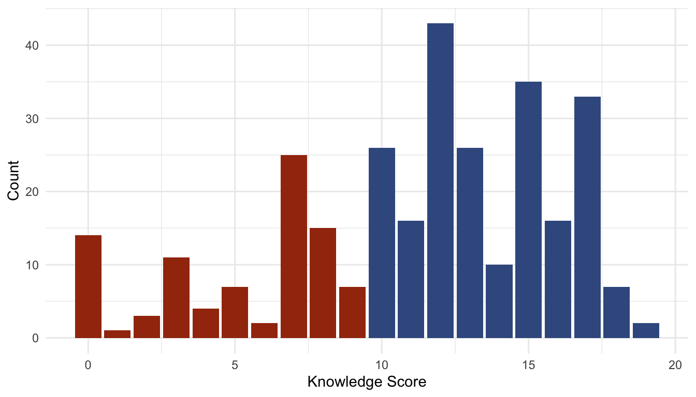

25 Years of Shortcuts
Examining Lupia’s Shortcuts Versus Encyclopedias 25 Year Later
Abstract: returning to one of the most cited articles relating to civic competence. Optimistic suggestion that voters with low knowledge behave similarly to voters with high knowledge when they have shortcuts. Two problems: 1) imperfect survey items to measure knowledge; 2) imperfect scale construction of knowledge. While the second problem can be addressed, the first cannot. That said, the major points holds - electors with knowledge shortcuts vote similarly as groups, though not to such an extreme as presented by Lupia in his original 1994 article. As I discuss in the final section here, this all begs the question about the types of information that important in making decisions at the ballot box.
Intro: Question always returns to: can the educated elite trust the masses to make good decisions? Thucydides: Mitilinean debate Plato: This question has presented itself under the guise of voter competence. Quite a bit of academic attention has been aimed at measuring competence. Half-serious treatment of how to improve the quality of democracy. Ironic that Lupia recommends system of signals - today is only signals and here we are.
Here I return to one of the most often cited: Lupia’s Shortcuts. Major finding suggests that, when it comes to propositions that have not aligned with the two major political parties, electors with low ``encyclopedic’’ knowledge behave incredibly similar to those with high encyclopedic knowledge. The results of Lupia’s original work hold, though not to the extreme degree as he presents them. That is only on the condition that we accept the definition of encyclopedic knowledge as the ability to recall a proposition’s intended effect.
So why am I doing this? A warning to readers to be wary of scales.
Background: Review Lupia
1988, CA, referendum 5 propositions to consider, 4 basic policies 2 major political parties had not align around these effects
Background: Lupia Survey and Measurements
Knowledge: Which proposition(s) established policy X? Shortcuts: Political figure or group Y favored which policy?
As mentioned above, the second problem addressed here is how the knowledge scale is constructed in the original study.
Knowledge point granted for correct affirmative answer. No point for leaving correct answer blank, and no point for answering in the affirmative for the wrong choice selection.
An illustration: Among the following, select those who are currently (2019) serving as United States Senators from Nevada: A. Dean Heller B. Jacky Rosen C. Catherine Cortez-Masto D. Harry Reid E. Dina Titus F. Don’t know
A respondent who chose responses “B” and “C” would be granted five knowledge points: two for correctly identifying Nevada’s current senators, and three for correctly NOT selecting any of the other three.
A respondent who selected “A” would be granted two knowledge points, both for correctly NOT selecting “D” and “E”.
A respondent who selected “F” would receive no knowledge points for this survey item, while a respondent who selected “F” and “B” would receive just one knowledge point.
Knowledge Distribution
Observational equivalence between unknown and dumb luck.
TO FULLY ILLUSTRATE: roughly 3% of respondents in the final analysis gave no response to this battery of knowledge items but were mistakenly assigned knowledge scores rather than considering them missing. This battery, which has 7 correct selections out of 20, ——- SO THESE RESPONDENTS WERE GIVEN A SCORE 13 - WHICH IS IN THE HIGH KNOWLEDGE CATEGORY.
Granted 3% of the final analysis is likely negligible, but it begs the question: how many respondents in the “high knowledge” category (10 or higher) actually belong there?
Knowledge Over Number of Responses

The structure of this knowledge scale rewards random guessing with high knowledge scores. There was no test in the original study that compared observed responses against random guessing.
Figure X shows the average number of correct responses, conditional on the number of responses given, across three groups: observed responses (color), simulated random guessing (color), and simulated psuedo-random guessing (color).
The pseudo-random guessing simulation trims a number of unreasonable random responses: no respondents will genuinely believe that a single proposition aims to DO ALL THE POLICY ALTERNATIVES. Reasonable assumption: if guessing randomly, guessing will be one per policy outcome. This is supported considering that a third of respondents gave 4 responses.
Knowledge Compared to Random Guessing

New Knowledge Setup
Simple adjustment: Assign points on affirmative answers only and remain agnostic to the rest. Treat non-responses as affirmative “don’t know” and vice versa.
This trivial alteration to the construction of the knowledge scale better comports with normatively desirable epistemological traits: ignorance is preferrable to false belief. Under the original construction, respondents who admitted ignorance were given lower knowledge score than those who guess randomly or reported holding false beliefs. Respondents can be more appropriately assigned to knowledge categories by researchers remaining agnostic about whether a blank response is a “no” or an “I don’t know” and by measuring knowledge strictly by affirmative responses instead (moreover, researchers can improve their survey design by asking respondents for affirmative responses: e.g. “Did Nader support Proposition 103, yes or no?”). Lupia’s construction conflated true belief, false belief, and ignorance to different degrees.

Distribution of New Knowledge Score

Replication and Extension of Table 4
| group | prop100 | prop101 | prop103 | prop104 | prop106 |
|---|---|---|---|---|---|
| Replication | |||||
| HK/S | 52.8 | 7.7 | 72.5 | 16.7 | 10.5 |
| LK/S | 53.3 | 5.3 | 73.1 | 16.7 | 12.5 |
| HK/N | 32.9 | 13.3 | 59.6 | 25.3 | 37.0 |
| LK/N | 25.0 | 15.4 | 23.1 | 34.5 | 45.3 |
| Extension | |||||
| HK/S | 58.4 | 4.6 | 72.7 | 13.1 | 6.2 |
| LK/S | 50.0 | 7.8 | 76.1 | 19.5 | 14.6 |
| HK/N | 36.4 | 12.7 | 63.0 | 23.3 | 35.4 |
| LK/N | 27.0 | 15.7 | 37.0 | 30.9 | 41.5 |
Clusters
This alteration to the construction of the knowledge scale is supported by a cluster analysis. Given that we are interested in similarities and dissimilarities between groups, it initially seems cluster analysis would be highly suitable here. However, won’t get into it here for a number of reasons: 1) clustering is not entirely suitable for this data, as it clusters about as well as random data (Index 0.5); thus, k-means clustering as an alternative to arbitrary cutpoints is only a slight improvement on the theoretical justification for group formation, with a slight loss of interpretability. Second, a motivation for this piece has been to improve Lupia’s analysis using the same tools available to him at the time. While cluster analysis was developed 1994, there have been significant improvements in ease of application that were not available to Lupia at the time (such as through R packages cluster, factoextra, and dbscan, which were used in the preparation of this article). To expand further on my second point: there were alternative approaches to constructing a knowledge scale that were no more sophisticated than the approach used in the original analysis - approaches that, I believe, give more honest results.
Cluster Plot

Discussion
In researching voter competence, scholars sometimes forget that they too use information shortcuts and that they too can be low-information voters. I had colleagues admit as much after the 2016. We are not experts on every political issue; very few of us can claim to be experts on more than one political issue (if that). A good starting point may be to ask ourselves how we come to ballot-box decisions despite relative lack of information.
Significant improvements have been made in the field of information shortcuts: At minimum: What is important to the voter? What are voter values? Who does the voter trust when it comes to making shortcuts? Who benefits most from policy x?
Finally, there is the matter of Table 2 - logistic model coefficients. (first, the models are hardly more predictive than random guessing - take with a grain of salt). Interesting that the shortcuts that really seem to matter are the positions of insurance industry and trial lawyers. In each case, the coefficient is in the opposite direction of the interest group’s preference.
| group | prop100 | prop101 | prop103 | prop104 | prop106 |
|---|---|---|---|---|---|
| LK/S/BL | 1.6 | 5.05 | 4.86 | 1.18 | 12.03 |
| LK/N/BL | 3.51 | 13.46 | 21.44 | 11.97 | 23.67 |
| HK/N/GL | 2.47 | 8.61 | 5.83 | 11.74 | 17.8 |
Chat on this for a while.